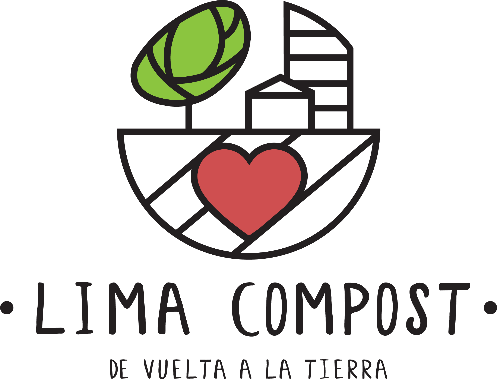

Volver a inicio
LIMA COMPOST
Tip para compostar en un hueco hecho en el jardín
Como se usan nuestras composteras producido con el MINAM
6 pasos para hacer compost sin problemas
Como se usan nuestras composteras
Como compostar usando solo materiales caseros
Como hacer germinados (superfoods)